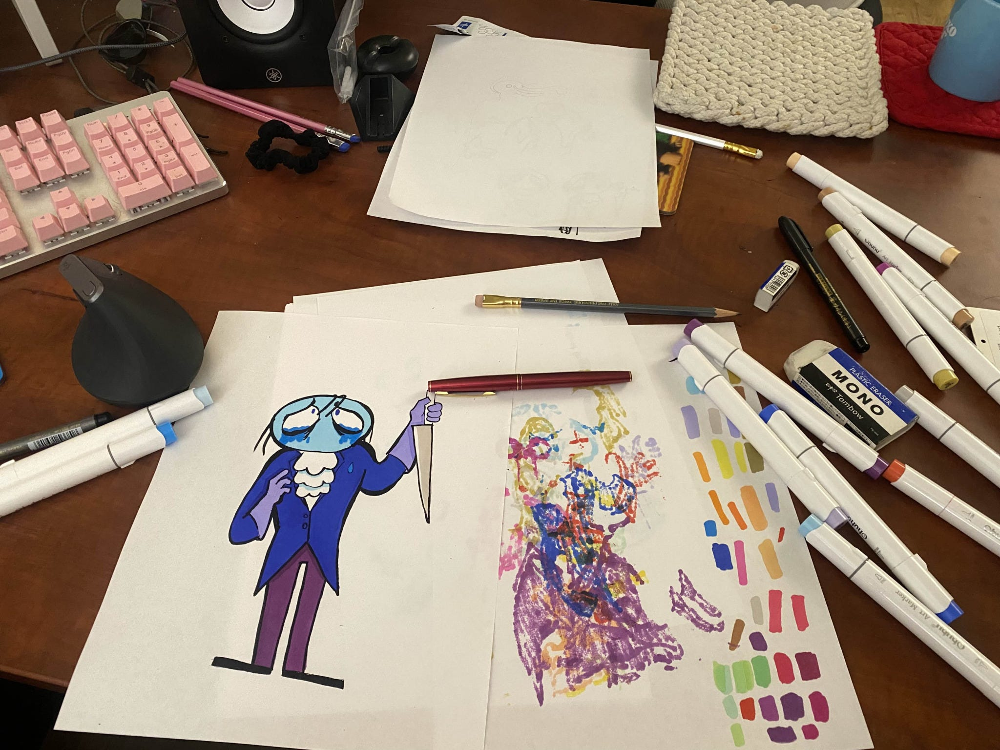
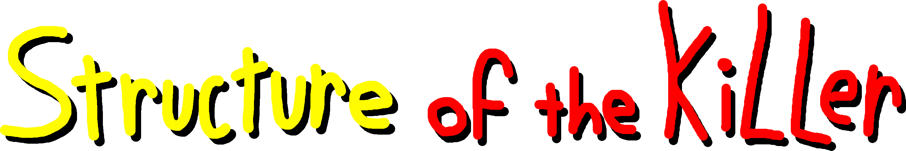
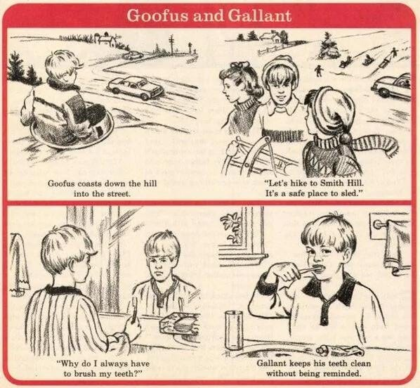
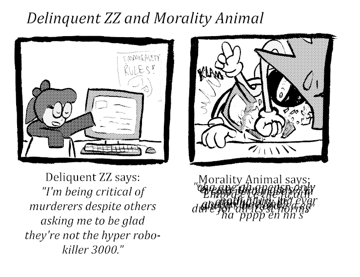

|
|
|
|
|
|
|
|
|

Behind the scenes of REVIEW OF THE KILLER,
my zine review of ANTHOLOGY OF THE
KILLER
Hello everyone. It’s been a while, hasn’t it?
I’ve been busy in the kitchen, although I have not been posting the fruits of my labor. It’s time to correct that.
I recently released (both online and in the REAL WORLD) REVIEW OF THE KILLER, a zine review of ANTHOLOGY OF THE KILLER, my personal game of 2024 and a game you should definitely play.
My review is available here. It plays in-browser and is free to read, print, and distribute (at cost, even). I do this because I truly want to see more game related zines out there in the world. Just get weird with it. To help accomplish that goal, as of today you will find updated print versions that are separately optimized for B&W and color, including professional print options such with bleed and the such. I will explain these in good time.
Anthology of the Killer is available here. It’s also on steam too, but I don’t think you need my help with that one. Please share with friends as well- its a game thats truly accessible for everyone to get into and play, and its a deeply moving experience when played. This isn’t time to get into the transformative nature of lets-plays vs. played experiences but trust me: this game rules playing it. Play it! Play it.
That is quite enough shilling out of me. It’s weird- 5% of you reading this will know me for everything else *but* this, and the rest of you *only* know me for this. This is going to continue to happen as I make things since I tend to make things about a lot of things, many things even. Is it strange for a fisherman to ponder about the fish in their net? For a fisher to ponder how the fish don’t hang out regular at the dive bar down the street?
The point of this post is less “impress you with prose” and more-so “engross you with behind the scenes, my artistic process, and decisions that went into making the final review.” The only thing I like more than art is talking about the making of that art. In other words: this one is going to be more off the cuff! I will try to edit for clarity, but don’t expect great prose in this one!
Yes that’s how you keep your audience. Lower their expectations…

Sorry that’s too funny to change on the second draft.

Let me dial back the clock: friend of the show (me. i’m the show) Harmful Park (find them here,OR support their friends game One Thousand Cuts) told me I should check it out. Over the course of two days I experience the most profound emotional release I had from a game this year: The review was always going to happen. I posted the original sticky note promo as a way of tricking myself into making it real. I decided that if I was going to be so bold as to pretentiously “announce” a thing I’m doing to my 8 biggest fans (luv u), I should tack on the words “available in zine format” to give it a reason to exist.
Usually I can weasel my way out of any deadline I set myself. I have surrounded myself with patient people (and gotten really good at going fast close to the finish line) to compensate.
You can’t do this when the author of the game likes the promo announcement you made. Well, you can. But it would be kind of lame wouldn’t it?
I had always considered turning my reviews into zines. I run a zine jam for the discord server I primarily hang out in, I hang out in zine distro spaces IRL, and I’ve always wanted to break into the zone with something more focused.

My previous experience was zines was making Mobius Loop, a companion zine for a small group of people doing a read-along for the Archie Sonic Comics. We got all the way up to issue 50 in the span of 8 weeks, so me and Discord user Rist produced 7 weekly zines for people who were coming in late/wanted something to chew on. Primarily I did character bios (do you know how many recurring characters there are in archie sonic. It cracks 100 before week 8, I’ll tell you that much) and cover art, as well as the general production of the thing. Without this experience, I would never have the confidence to get ROTK out within the 12 day time frame I gave myself.
It was shockingly late in the game I realized that I would *ONLY* make the review available in zine format. The idea was to do a simultaneous release, which is something I even cheekily reference in the review itself. I was going to try and keep the reviews different, but this was just too much work, and all of my good ideas were best utilized in zine format.
I scrapped the blog review and focused on making my dreams come true.
Initially I knew LESS what the zine version would look like. I tried to draw on as much inspiration from the source material as possible that laid within my own interests- what I eventually landed on was this:

You may remember these things. They always reeked of evil in some way. For what purpose are we having the fun?? In every Doctors-Dentist-Barber waiting room was a pile of children’s magazines- my mother would always comment how she fondly remembered highlights from HER childhood. They are full of the most disappointing games and activities a child could ever obtain.
The goal was to try and do “highlights but evil and cool.” Nearly none of that initial push made it into the final thing- I will definitely revisit this concept. The draw of the concept was growing up in a barber shop and thumbing the same 8 issues of Highlights hidden underneath piles of inappropriate men’s magazines- crosswords, where’s waldo, weird comics about morality and goodness- things like that!
The other clear idea: doing daily strips for AotK. A lot of people have drawn the line between the games and comics as a medium- and they make up some of the sourced inspirations. My head always drifted towards newspaper comic strips: their surrealness, the short stabbing nature of the dialogue, the narration of the self, and their own entrenched love of the mundanely bizarre crawls out of every episode in Anthology of the Killer. No, not the racist ones. God I cannot tell you how much of a racist minefield old newspaper comics are.
The art style also just reminds me of newspaper strips as well- the flat colors, the abstract shapes, the enjoyable to construct figures for your main characters- it all just clicked into place. Also, newspaper strips where were I fell in love with ink in the first place, so it seemed like a natural inclusion.
Oh yeah, almost all the art is hand drawn in this thing, including the trim. Let’s talk about that.

So some background: I practice physical ink because I am a coward with using a tablet. Until about a year ago every line I could draw stank of misery. That’s no longer the case! I got to a level I feel comfy at now! The idea of starting that process over again with the temptation of an undo button does not appeal to me. So yes: I promise I’m not a luddite!!! Yes, I see you about to point out how they were cool actually. I know this!! I’m not cool either!!!!!!!
Color is actually new to me, fun fact. I’m primarily an inker, and my plan was to digitally color all of my pieces starting from around last June- but a chance encounter with some alcohol markers delayed that from happening. So I have a 2 step process: do the line art on paper, copy that with a laser printer, and then use alcohol markers to color that in for a clean scan. I digitally touch up the black tones to offset the darkness that a scanner often infects drawings with, and BAM. Finished image. See below for some examples and memorabilia of my process.
The alcohol markers bleed thru my printer paper, so I have a stack of papers to catch the ink. I kept this all on

All of the teaser originals. I acutally don’t know what to do with these… they will essentially stay in storage, and i’m not sure how many people keep a PO box to receive art crudely mailed on stock printer paper…

So I don’t use Copics, because i dont have bajillions of boondollars… these are Ohuhu markers, which are also really nice and cost me less. Truthfully I didnt buy them, and therefore I don’t know anything about them, other than that they are in fact quite nice to use. This is every color I used for the production of the zine.

Original Scan of the lineart, untreated. You can see the ink isnt hyper solid everywhere. Normally I don’t scan these, but I photocopy them because I have a laser printer that makes a crisp black that DOESNT lift when I use my markers.

Original Scan of the colored piece. As with all art, the colors get a bit squashed going from Real Eye Vision to RGB colorspace (the way a computer screen displays it (except your iphone sometimes, which yes can deal with color spaces that are slightly bigger than 8 bit, its complicated)) So yes, the colors I eyeball have to translate to the computer, then translate to print (which is in CYMK, and even more restrictive color space). The biggest example is the “orange” used here: it’s actually salmon in real life, and looks frighteningly light.
Above is the final, processed image. No, its not just that its a transparent PNG- I isolate the black lines from the image in GIMP, and then I bump up the contrast to sharpen the lines to actual pure black. I’m a stickler for lines that don’t grey out, and the scanner attached to my printer tends to blow out black lines to almost grey. Am I being a bit of a perfectionist here? Sure. But let me show you a different example of what my scans used to look like BEFORE I bumped up the contrast:

Yes. this is about the Floigan Brothers. That whole pet fascination is a whole other conversation lol
Look at that. you could smell the amateur. It would look so much nicer If I bumped up the contrast. It’s true that it’s more obvious that my stuff is hand drawn, but maybe not in a good way here.
Anyways…
Now normally when I’m working quick, I usually use a lighting system with extreme white highlights. My grip on lighting is currently “vibes based” so don’t learn any lessons from me. Anthology of the Killer uses flat vibrant colors with generally environmental mood lighting over any explicit volume based lighting for its characters- generally speaking, the characters revel in their flatness. I wanted to lean into this, so I eliminated the contrast bright tones. Looking back, I regret this a bit- it just had the effect of making my own personal drawings look a little bit flat. But maybe I’m wrong! Peep the comparison below and form your own opinions!

Most of the line art was done with zebra brush pens, which are my go-to as far as disposables go. I have also used various brush pens of the bristle variety and wow: for some reason, a terrible mildew infected my newest brushes, which made several parts of it (and other brushes I owned) unusable!!! It was awful. Going forward, I’m just going to commit to dip brushes so I can clean everything in between uses…
Perhaps the last thing to talk about is the teasers. I suppose I should collect them all so they’re in one place. Feel free to click through them- You can see that the backgrounds (which were generated with various rendering tools in GIMP) got a little better everytime. Fun fact: the last one turned out so good that I ended up using it for the Zine’s Itch preview- Marcies shadow is actually what makes the inner little spooky spiral, so you can still see a portion of her figure looming over bb. IDK if anyone can see it, but that particular character dynamic is very important to me…

|

|

|

|

|

|

|

|

|
The truth is that I never expected these drawings to draw a crowd. I wanted to do these daily teasers because I thought it was a funny joke to take my work seriously as if it had people sitting there, waiting for it. I guess you can just sort of wish that crowd into existence????
In particular, I cannot thank enough Daily of The Killer, a daily art blog who found my teasers early on and more or less helped promote the whole thing while cheering me on. Looking at their art early on pushed me to really do a good job with my semi-daily teasers and the zine in general. Also thank you to thecatamites (main dev of anthology of the killer, although I’m sure you know that) for sharing the zine on the day of release. It meant a lot to me!!!!!!
Also, as you can count, I am missing some days. here are some assets I made to fill in some of the missing days… try and guess which image is exhaustively popular, and which one is not.

|

|

|

|
Various promotions outside of the teasers.
While I had the basic ideas of the activities for the zine, the review itself was tough to crack. I had written chunks at disparate times, and I found I had my arms tied in regard to length, specificity, and flow. Not only are the OF THE KILLER games hyper approachable, but they’re also episodic and modest in length. It is a pristine package that punches you in the gut. The problem is that for the purpose of a review, technically the sentence I just wrote is all you need. In fact, i’m pretty sure it’s the exact steam review I left.
I usually like to write about games that have been around for some time because I love to write about games in depth- when it comes to smaller indie games that truly touch me, my primary concerns less so dissection and more so getting everyone else to share the experience with me. More people should play these games, and the worst thing you can do with a review trying to accomplish this is to do the thing where the guy at the party tells you about how great a show is by repeating all the jokes badly at you. You can avoid that, but a dissection can wrongly give the air that “I have played the game for you.” I have not. You go do that, now if you somehow still haven’t. Yes I’m talking to you. Make me some tea while you’re at it.
The goal shifts- the remaining aim is to describe the game perfectly without describing it entirely. Normally my reviews tend to have some semblance of flow (like most prose). I am most motivated to write when I have an interesting structure to base the piece out of. My Pikmin 4 review, for instance, is broken into 5 parts that aim to approximate the tone and vibes of the original 5 levels of Pikmin 1, despite the piece not being about that at all. It’s a good review by the way, you should read it.
For a long time I struggled with a structure for this piece. I had sketches of writing with clear distinct goals but could never marry their ends and beginnings to eachother. I am a big fan of breaking an analysis into big obvious sections for pacing reasons, but the writing I had felt too episodic. At that point I realized the game I was reviewing was an anthology of episodes, and that I had already been jokingly calling each section “___ of the Killer.” From here, the review finished itself, as I no longer had to work to stitch together the individual blurbs I had written.
I’m ultimately glad I went with this- I think it enhanced the feeling of the final zine. Page turns naturally disguise non sequitur breaks in your writing, it turns out.
Of course, while the text was written, the visual elements quickly took form. There were a few things I needed to keep in mind and avoid:
1. The promo art I produced would be repurposed throughout the book, and the remainder would be presented as “paper dolls.” Its fine to present art as is and many do it- but it feels alien to me personally. I tend to use art as a pace breaker for long articles, or as some sort of artifact. Even though all I was doing was writing a blurb and putting dotted lines around the art, it felt like a fun way to get people to remember the art. One IRL friend would tell me the paper dolls were her favorite part- I have mixed feelings on this sentiment, but that is how all art goes, isn’t it? People love you in surprising ways, and I try to think it best to not ask too many questions. Only cops ask too many fucking questions. The paper dolls idea was one of those that made the zine doable- I could even have up to 2 blank pages to use in case the page count was off. oh yeah,
2. THIS ZINE NEEDS TO BE PRINTABLE IN BOOKLET FORMAT. More on this later, but the biggest requirement is that you must have a page number divisible by 4. Let me tell you: the difference between 20 and 24 pages is ROUGH. One page over 20, and now you have 4 pages over 20. This is made worse by:
3. THE PAPER DOLLS PAGE NEEDS TO BE ON THE CENTER FOLD. That means in my 20 page zine, pages 9-12 were mostly taken, 10-11 esp. If people were gonna cut up the zine, I needed them to theoretically be able to remove the page. This quickly became a pain because:
4. THE DAILY COMIC STRIPS NEEDED TO BE LATER IN THE REVIEW ACROSS A 2 PAGE SPREAD. I came up really early on with the idea for Wednesday, titled “The Big Day.” I knew in general I didn’t want to give people an impression of the character BB at all without first talking about some of the core details of the game. One more problem:
5. AVOIDING DUMPING ALL THE ACTIVITIES IN THE CENTER OF THE MAGAZINE. I always hated how children’s magazines did this- it felt like your fun and games were being excised from the body of the magazine itself, and I’d rather have some of the “fun” breaking up some of the sections. I would fail this because:
6. THE ORDER OF THE TEXT SECTIONS ARE PRE-DETERMINED. Yeah, I had no flexibility here, with a one page section sort of disrupting the math of the whole thing. It was a nightmare, and so I ended up cutting some content and putting the comics and paper dolls next to each other. Drat.
7. I NEED TO BE ABLE TO PRINT THIS IN BOTH A4 and LETTERHEAD, MARGINLESS OR MARGINMORE. Okay, its worth examining how I did this:

I have never worked in a copy shop and it shows. All of the people i know that are REAL paper heads have cut their teeth on toner tubes and the worst lights corporate could buy. I had to figure out all this paper shit on my own, and it was a lot of misery and error. Did I mention I’m number blind? So there’s that, too.

For those not in the know, there are two common paper standards. A4 is a nice sizing scheme, where folding it in half hamburger style makes a paper shape that has the SAME ratio as the pre-folded paper (this would in fact be called A5). It’s really convenient so it should surprise nobody that Americans don’t use it. We use letterhead, which is 8.5”x11”. This is slightly stouter and MUCH shorter compared to A4’s 8.27”x 11.69.” So basically: letterhead is short and stout, while A4 is tall and skinny.
Except we don’t care about that. This is a folded booklet, so actually we’re working with half letterhead (5.5” x 8.5” ) and A5 (5.85ish”x 8.27”). The roles are now reversed: Half letterhead is the tall and skinny one, while A5 is pretty dang wide. Fun fact, you may have noticed half letterhead is half the dimensions (so 1/4 the area (don’t ask)) of 11”x17”, a real paper size you can buy called tabloid. You might think that’s a convenient feature, but in reality tabloid is just 2 letterhead papers stuck together side by side- which means its half size becomes a 1/4 size of the new Frankenstein paper. This is true of all paper, of any size. Double it, and its half now becomes its quarter. Make sense? No? Oh yeah, this is my robosona, which is me So what’s it gonna be? Huh? HUH?????

Anyways, with that in mind I had to structure my pages so that way all of the text and general cool stuff in the trim fit 1/8th” from the smallest dimensions of both pages (so in 5.375” x 8.145” box). Then, I had to make a trim that would fill the space from the borders of BOTH sizes largest dimension (IE 5.85”x8.27”). The reason I had to redo all versions was that I had ALSO forgot the 1/8” around all sides required for printing margin less prints, which means I had to resize all border elements to fit into a 5.975” x 8.395” box.
So here’s where I confess something that seems to make other artists feel atlas-load worths of pity: I primarily use gimp for the Contruction of these things. I use it because Its simple to use with a limited feature set, general works, and also because I have sworn I will never touch an adobe product. Just pirate it? I refuse. Piracy is cool, but I’ll be damned if continue to live in a world where everyone is using photoshop so all questions you might have will just point to some nebulous photoshop feature. We have free software!! I’m going to stick to that instead, power be damned. Yes, you can send me my medal in the mail.
Basically: I generate a SINGLE gimp file set to 600 ppi (welcome to the modern storage age) at 5.975” x 8.395”. Then I drew a trim and tried to fit it so It would indicate the safety box in the center- this meant I had to eyeball the paper dolls page. If I was thinking, I would make separate layers that ONLY extended to the safety box size, but here we are.
I organized the trim into different layers in a group, and then would create layer groups for each page. This would contain things like the title, the text, any extra assets that might lie within. Once all that labor was done, I would essentially Export the files as PNGs (flattening the assets and text) one page at a time, turning on and off the basic trim elements at will- you see this with the “of the KILLER” title, that’s how it ends up in the same spot every time. I like to think its a little like those huge animation camera towers where you had cells on different layer levels, and you’d arrange everything and take pictures with different setups.
Once I had these grossly oversized PNGs, I combined and converted these pages into a single PDF, then simply opened that pdf in gimp. Resizing them for A5 and half Letterhead is easy from here- you already did all the work with the margins! When you open a pdf in gimp, it opens them as individual layers at whatever ppi you set (I chose 600 ppi to preserve the original quality). Then, I simply changed the “image canvas size” to the desired size of A5 or half letterhead and watched as every layer was resized. Then I simply exported it as a PDF again, making sure to check the box “treat layers as separate pages.” Fun fact, I did not do this for the letterhead version on release, so it instead layered all 20 pages as one layer, and PDFs are annoying in that they don’t naturally flatten themselves, but instead treat this as 20 assets stacked on top of each other.
By the way- this is a way for YOU to make zines and make them globally available. I should make a zine about this. I will make a zine about this- but you should take this advice already start making shit now. I like reading peoples shit! Send it! No really- I will read anything you send me. I am just sort of like that.

So some stuff got cut.
The biggest thing that got cut was SUNDAY of the KILLER- the original plan was to do a whole week of comics. It was cut due to time limitations- the idea of drawing a rainforest cafe reveal in the last big panel was always in the cards. The Sunday format is an infamously choking layout requirement for newspapers to geometrically cut up your strip for page layouts, including a large chunk of your comic required to be a literal “throwaway gag.” I really wanted to complete it- even for these bonus features- but I couldn’t. It was just a victim of time and execution. My general setup was BB going on a bad friend finding date thru an app, and for the final gag to be a zoom out of beautifully rendered Rainforest cafe interior (because yes. I did know who Cha Cha the frog was, i was in fact one of those kids who studied menus and character biographies like it was a tasty treat). The thing I couldn’t square was BB getting on these apps- it just felt to antithetical to the BB presented. Always the doer, never the wanter. There’s a really good Ace reading in Heart of the Killer, and I’ve always tried to keep that in mind and not put BB in those situations. IDK. This is just my own thoughts, keep in mind I literally just showed you a picture of the weepster and blue d hands getting mad sloppy.
The other reason it was cut was because it turns out that both half letterhead and a4 are TERRIBLE for comic strips, Sunday or otherwise. This is why book collections are frequently printed in strange yet beautiful shapes. If you go back and examine Monday-Saturday, you might notice the text is absurdly large for most strips- its because I knew the size ratio for comic strips would severely limit their readability when shrunk. The Sunday format, which is printed with 4 rows vertically, would have been a tiny disappointment. Maybe make a better one than I would have as an exercise.
Courtesy Highlights Magazine, you puritanically adjacent magazine you
What also got cut were more goofus and gallant parody strips. Goofus and Gallant are a recurring chick-tract-meets-family-circus type deal that teaches morality and manners- Goofus is a jerk, where gallant is beloved by all. When I did the teasers, I made sure that all the episodes would be represented in some way except for one: I never drew morality animal. I really like morality animal. Like a lot!!! It was only natural I wanted to do a full page of goofus and gallant shenanigans starring the other character I hadn’t drawn much, ZZ. I feel like she’s sort of a cool and confident delinquent anyways. You only got one strip due to similar time constraints.
Fun fact: The text actually does say garbled versions of real things I’ve heard that annoy me personally. No, I won’t tell you what they are. Have fun decoding.

While we’re on the subject of the comics, let’s talk about voices: I feel bad about having to kind of “fill in the gaps” with BB. Part of BB’s character is this omnipresent narration and a sort of stoic stability of self (which is a bit ironic given the uncertainty that is at the core of the character). This is my read of her of course, but that’s the thing about writing a character that isn’t yours: you’re going to bring yourself to it, and it’s going to change the character. I wasn’t able to make the narration work for 3 panel strips, and so I had to actually convey BB a little more passively than I’d like.

“the big day” is probably the riskiest of the strips. It was aimed at people who haven’t played the game yet to try and hint a deeper mood at the games core than it or my writing lets on, but ultimately It isn’t really the kind of thing you’d see in the game itself, and maybe is a bit more personal than I’d let on. My justification is simple: I think everyone has had a bad thing like this happen. What it is, I won’t tell you, because deep down you already know.
Perhaps in truth, it is more about what happened to me to make this game speak so deep to me. It also was merely a simple evolution of “how can I make a joke about drawing BB in the same pose 3 identical times.”
As far as other cut content: I was supposed to draw a teaser of BD HANS Kissing the weepster. It was going to be rendered in full sloppy color. Please enjoy looking at the sketch of it one last time.
I also planned to do a simple waldo tribute. You cannot “simply” do waldo. It has to be in color and it has to be big and it has to be beautiful. It would have taken me as long as it took me to do the whole zine as it would take do a waldo.
I also thought about doing a LIFE style board game removable but decided against that because its kind of its own good idea. Feel free to steal that idea. Feel free to steal any ideas. I think making that bad of a Kathy Aker pun legally requires me to say that.
By the way: I was looking for places to sell the zine in the real world and wouldn’t you know it: the person asking the same question indicated they stumbled into the world of underground zines via podcast discussing Cathy the comic strip- did someone beam this into my head? Is Cathy making a comebACK? Did I miss out on the new wave Cathy????????????
Anyways, I also failed to come up with a puzzle that was funnier than the murder crossword that’s in the zine that comes with the game.
Oh yeah, did you read the zine that comes with your game? Check your files and print it yourself- its good! Although if you’re American you’re going to have to do some cutting unless u like big margins… a suitable tax.

So what’s next for me? You’ve gotten to the end of my post, there is a good chance that at this point you care about my creative outpost in some way.
Here’s what Is on my plate commitment wise:
- The third Goblin Bunker ZINE JAM is underway RIGHT NOW. If you want to join, Here is a link{} to the discord. Its not mine, so behave. Seriously. The zine jam’s theme this time is more or less game emulation and piracy, but there is a lot of flexibility there. Trust me, I like it when people defy the boundaries placed upon them!
- I have to draw the covers and do character bios/work for the return of MOBIUS LOOP, an archie sonic read-along supplement fanzine I run with Discord User Rist, who i think has literally no social media. Good for you rist… you are safe from my shilling for now.
- I’m gonna do a bunch of art. I’m trying to be good so I can do commissions on time for people, because I like drawing things for people and I like the idea that those drawings could buy me more art supplies/ money for prints.
- I’m going to experiment with riso. don’t expect me to sell stickers or riso prints of Anthology of the Killer because I wouldn’t dare do that without permission for a more niche game… Idk. I feel weird about that sort of thing in this case. I only say that because the sticker thing has been pointed out to me privately, and I have had to really ruminate on it.
- I have to finish a very simple game sometime start of the next calendar year. It will be a fun diversion for you, I hope.
- I will be finishing a really long story about the three different original Mcdonalds, the mythology of business, and the damage we do when we all pretend that corporations didn’t usurp global infrastructure. I’m not sure I can fit that into a zine, but maybe it’ll just be really thick. Who knows. Its been in my pocket for a while now…
- Maybe someday I will finish that Floigan brothers comic. I’m not kidding.
- I will in fact revisit Anthology of the Killer to do analysis after some time passes… there is a lot to unpack, and I want people to play the game first before I do so.
- The next 2 review zines will be about 2 games near and dear to my heart… 24 Killers and Before the Green Moon. Pick them up and play them right now if you’re thirsty for a new experience to chew on.
My final words: Thanks for sticking with me. Scrolling down here shows you care, and I greatly appreciate it. If you really liked my zine and want people to play the game, maybe send them my review if they like reading. Truly this isn’t something I made for people who enjoyed the game: I want this out in the world giving people an insight to something new. I’m not kidding. If you make a bunch of money printing and selling my zine for your booth at a fest somewhere, think nothing of it. You just made me happy because hopefully someone saw a game review zine and thought “wow I could and should do that!”
Thank you for reading.

|
|
|
|
|